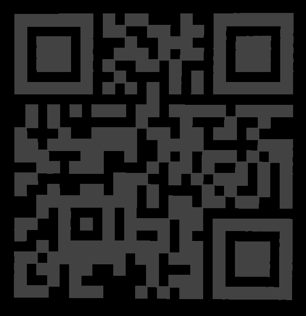

This year, we dance outside, yeaahh!
Wow, beautifully designed!! Quite some time passes while admiring the disco ball
from all angles, zooming in, zooming out and listening to the music.
Really creative!! But ... where's the flag?
The page source reveals that this is done with Three.js,
a cross-browser JavaScript library for rendering 3D graphics. Lights, surface textures,
background reflections ... the works. Of particular interest is a JavaScript include file,
js/mirrors.js, which lists the centre coordinates of a huge number of mirrors:
var mirrors = [
[-212.12311944947584, 229.43057454041843, 249.7306422149211],
[360.6631259495831, 169.04730469627978, -36.67585520745629],
// ... 1930 mirrors ...
[-170.04342714592286, -346.41016151377545, -105.2864325754712]
];
Surely something can be hidden in this mass of mirrors. Checking the distance sqrt(x^2 + y^2 + z^2) of each mirror from the centre reveals that 1602 of the 1930 mirrors lie on the disco sphere with radius 400. The remaining 328 have much smaller distance; they are masked by the spere and therefore invisible to the outside viewer. Let's modify the script to make them visible:
sceneCube.add(cubeMesh);
scene.add(sphereMesh);
for (var i = 0; i < mirrors.length; i++) {
var m = mirrors[i];
if (m[0]*m[0] + m[1]*m[1] + m[2]*m[2] < 159999) {
mirrorTile = new THREE.Mesh(tileGeom, sphereMaterial);
mirrorTile.position.set(m[0], m[1], m[2]);
mirrorTile.lookAt(center);
scene.add(mirrorTile);
}
}
→ Much better: a QR code. Difficult to read though.
mirrorTile.lookAt(0, 2000, 10000);(0,0,10000), because the QR code plane is at a slight angle.
sphereMaterial2 is defined
in line 122 for the body of the spere. Might as well use that: change
the 4th lien in the fragment above to mirrorTile = new THREE.Mesh(tileGeom, sphereMaterial2);

After taking a screenshot, adjusting the colours and flipping the image,
the result is good enough to pass a QR reader:
he19-r5pN-YIRp-2cyh-GWh8